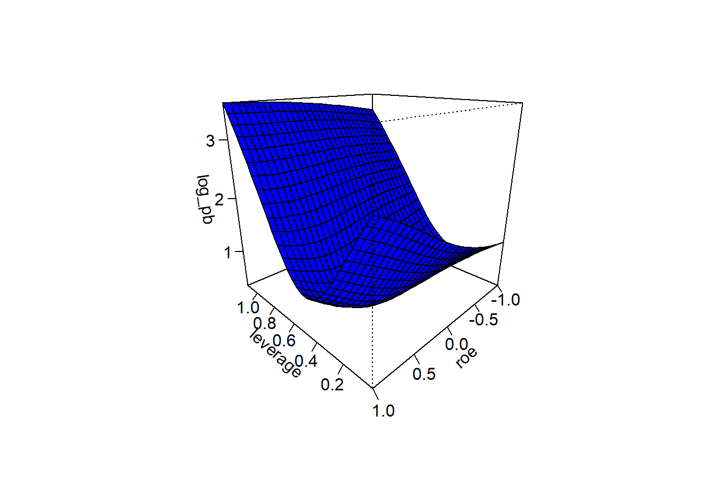
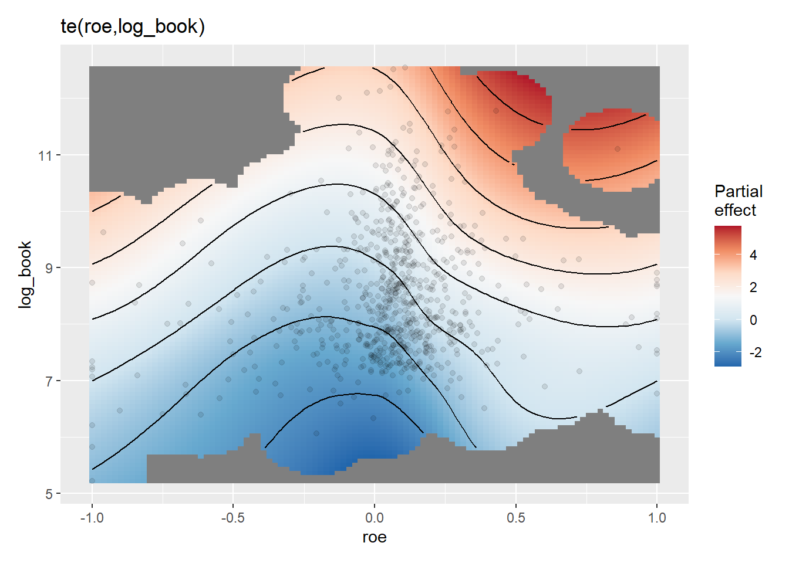

A replication of the ecological models per Hierarchical generalized additive models in ecology: an introduction with mgcv using stock data.
Load the required packages and the standard data set for analysis
library(romerb)
library(mgcv)
library(gratia)
data("stock_data")
fundamental_raw <- stock_data
rm(stock_data)
# Data
df <- fundamental_raw[fundamental_raw$date_stamp == as.Date('2021-06-30'), ]
df$log_mkt_cap <- log(df$mkt_cap)
df$log_book <- log(-df$total_equity_cln)
df$roe <- df$roe * -1
df <- df[df$date_stamp == as.Date('2021-06-30'), c('symbol','sector','log_book','log_mkt_cap','log_pb','roe','leverage')]Using the factor smooth basis.
# Model
gam_mlm1 <- gam(
log_pb ~ s(roe, k = 5, m = 2) + s(roe, sector, k = 5, m = 2, bs = "fs"),
data = df,
method = "REML"
)
# Predict
gam_mlm1_pred <- predict(gam_mlm1, se.fit = TRUE)
df$pred <- gam_mlm1_pred$fit
df$sepred <- gam_mlm1_pred$se.fit
# Visualise
ggplot(data = df, aes(x = roe, y = log_pb, group = sector)) +
facet_wrap(~reorder(sector, as.numeric(sector)), ncol = 4, scales = 'free') +
geom_ribbon(aes(ymin = pred - 2 * sepred,
ymax = pred + 2 * sepred), alpha=0.25) +
geom_line(aes(y = pred)) +
geom_point(alpha = 0.3) +
labs(x = 'Return on equity',
y = 'Log price / book ratio')
# Model
gam_mlm2 <- gam(
log_pb ~ s(roe, leverage, bs = "tp", k = 5, m = 2), #+ s(roe, sector, k = 5, m = 2, bs = "fs"),
data = df,
method = "REML"
)
# Predict
interval <- 30
roe <- with(df, seq(min(roe), max(roe), length = interval))
leverage <- with(df, seq(min(leverage), max(leverage), length = interval))
new_data <- expand.grid(roe = roe, leverage = leverage)
gam_mlm2_pred <- matrix(predict(gam_mlm2, new_data), interval, interval) #, type = "response"
# Visualise
# https://bikeactuary.com/datasci/gams_scams_pt1
persp(
x = leverage,
y = roe,
zlab = 'log_pb',
gam_mlm2_pred, theta = 225, phi = 20, col = "blue", ticktype = "detailed")
Using a tensor product smooth. Modelling market capitalisation on return on equity and book value of equity.
# Model
gam_te1 <- gam(
log_mkt_cap ~ te(roe, log_book, bs=c("cc", "tp"), k=c(10, 10)),
data = df, method = "REML"
)
# Visualise
gratia::draw(gam_te1)
Same model, visualise with a 3d plot.
# Predict
interval <- 30
roe <- with(df, seq(min(roe), max(roe), length = interval))
log_book <- with(df, seq(min(log_book), max(log_book), length = interval))
new_data <- expand.grid(roe = roe, log_book = log_book)
gam_te1_pred <- matrix(predict(gam_te1, new_data), interval, interval)
# Visualise
persp(
x = log_book,
y = roe,
zlab = 'log_mkt_cap',
gam_te1_pred, theta = 45, phi = 20, col = "blue", ticktype = "detailed")Modelling price to book ratio on return on equity and leverage.
gam_te2 <- gam(
log_pb ~ te(roe, leverage, bs=c("cc", "tp"), k=c(10, 10)),
data = df, method = "REML"
)
gratia::draw(gam_te2)Same model, visualise with a 3d plot.
# Predict
interval <- 30
roe <- with(df, seq(min(roe), max(roe), length = interval))
leverage <- with(df, seq(min(leverage), max(leverage), length = interval))
new_data <- expand.grid(roe = roe, leverage = leverage)
gam_te2_pred <- matrix(predict(gam_te2, new_data), interval, interval)
# Visualise
persp(
x = leverage,
y = roe,
zlab = 'log_pb',
gam_te2_pred, theta = 225, phi = 20, col = "blue", ticktype = "detailed")Once again using plotly.
library(plotly)
p1 <- plot_ly(z = gam_te2_pred, type = "surface")
p13d plots with color
https://stackoverflow.com/questions/22652941/how-to-add-colorbar-with-perspective-plot-in-r https://stackoverflow.com/questions/31374951/add-points-and-colored-surface-to-locfit-perspective-plot https://stackoverflow.com/questions/24918604/how-to-have-only-every-other-border-in-a-persp https://stackoverflow.com/questions/3786189/r-4d-plot-x-y-z-colours